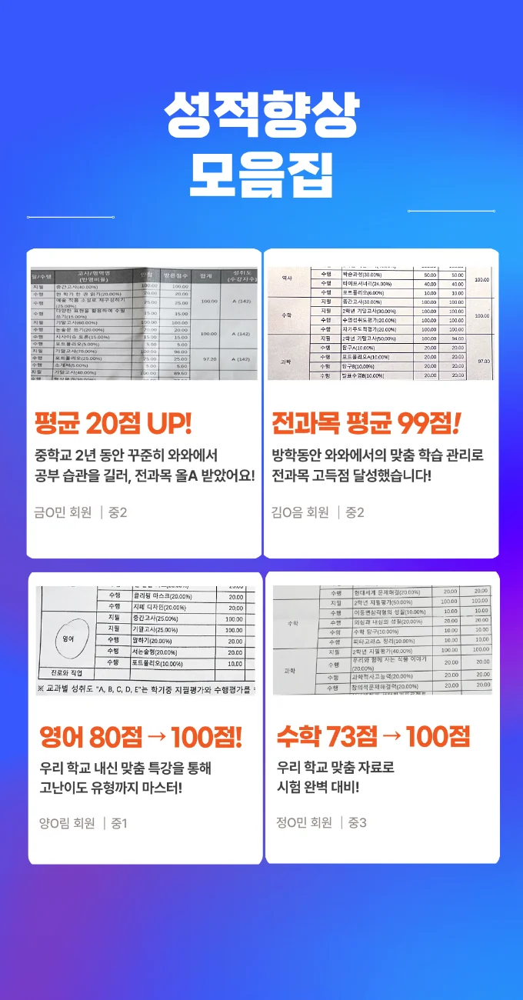
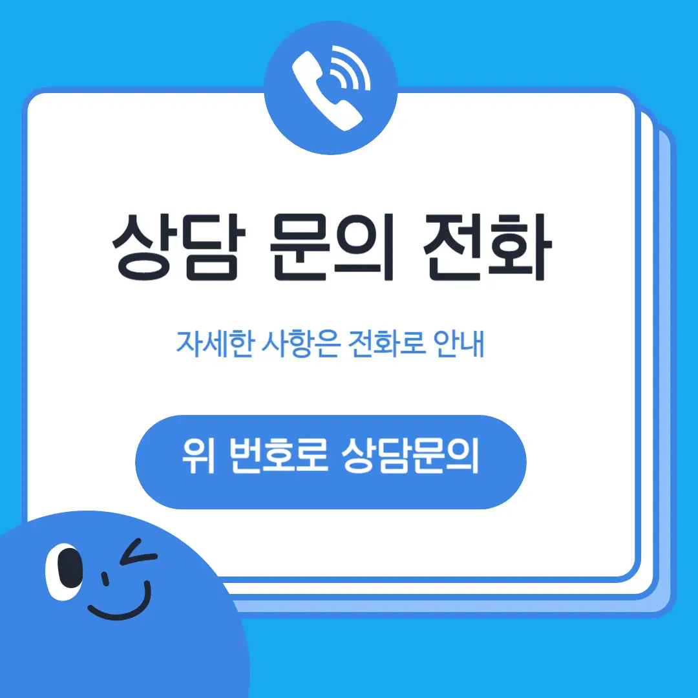

학습 목표를 명확히 세우고 스스로 집중도를 점검하는 체크리스트를 활용해요. 교육 프로그램이 실생활과 연결되는지 살펴보면 선택 폭이 넓어져요. 강사진 경력과 피드백 체계가 투명한 곳을 우선 고려해요. 주변 학부모 의견을 들으며 실제 수강 경험을 비교해요. 거제수월동 지역 특성을 고려해 거제수월동 자기주도학습학원 위치와 접근성을 검토하면 편리함을 느낄 수 있어요.
각 학년마다 학습 동기와 집중력이 다르게 나타나요. 초등 저학년은 놀이와 연계된 학습이 효과적이며, 실생활 예시를 통해 기초 개념을 형성하는 것이 중요합니다. 초등 고학년은 문제 해결 능력을 키우기 위해 다양한 유형의 연습 문제를 제공하고, 스스로 학습 계획을 세우는 습관을 길러요. 중학생은 교과서 위주의 심화 학습과 함께 오답 노트를 활용해 반복 학습을 강화하는 것이 필요합니다. 고등학생은 시험 대비 전략과 함께 피드백 자료를 체계적으로 관리하여 실전 감각을 높이는 것이 핵심이에요. 전체 학년에서는 기초 개념을 탄탄히 다진 뒤 점진적으로 난이도를 올리는 단계적 접근이 가장 효과적입니다.
와와학습코칭센터는 학생이 스스로 요약 과제를 만들어보는 수업 방식을 택하고 있어요. 기초 개념을 시각화하여 쉽게 이해할 수 있도록 도와주는데요. 만약 학생이 스스로 요약할 수 있다면 공부를 아주 잘하는거겠죠. 주요 대상 학생은 기초가 다소 부족하거나 학습 습관을 잡고 싶은 아이들이에요. 커리큘럼 특징은 단순 강의가 아니라 코칭을 통해 스스로 문제를 해결하는 힘을 길러주는 거예요. 수강료는 초등현대무용(저학년)(고급)1 90,000원 | 초등현대무용(저학년)(고급)2 160,000원 정도 형성되어 있어요. 이 거제수월동 자기주도학습학원을 선택해야 하는 이유는 아이가 자신의 학습을 주도적으로 관리하는 방법을 배우기 때문이에요.
| 학원명 | 와와학습코칭학원 |
| 수강료 | 초등현대무용(저학년)(고급)1 90,000원 | 초등현대무용(저학년)(고급)2 160,000원 |
CURRICULUM
커리큘럼은 주차별 리포트를 제공해 학부모와 학생이 진행 상황을 투명하게 확인할 수 있어요. 교과서에 실린 그림이나 표를 해석하고 설명하는 활동을 통해 시각적 이해도를 높여요. 매주 진행되는 복습 시간에는 이전 주 차의 핵심 개념을 짧게 요약하고, 퀴즈 형식으로 재점검해요. 거제수월동의 다양한 문화시설과 연계한 현장 학습도 일정에 포함돼, 실제 적용 능력을 키우는 데 도움이 돼요. 이러한 구성은 학생 스스로 목표를 설정하고 달성 과정을 기록하도록 설계돼 있어요.
거제수월동 인근 학생들은 영어 단어 시험에서 사십 점을 받던 아이가 구십 점으로 올라가는 사례가 많아요. 많은 사례가 있는 이유는 개인에게 맞는 암기 루틴을 구성해 주기 때문이에요. 구성해 주는 루틴을 통해 학습 과정 중에 몰입을 방해하는 요소를 사전에 차단할 수 있도록 도와주거든요. 차단하고 나니 아이들이 집중하는 시간이 훨씬 길어졌다고 해요. 길어진 집중 시간만으로도 학습 효과는 눈에 띄게 좋아지니까요. 이처럼 환경을 통제하는 것이 성적 향상의 열쇠랍니다.
와와거제수월동 자기주도학습학원의 학습 전략은 실력보다 먼저 기대를 심어주는 커리큘럼 구조 설계에서 시작해요. 감정 체크 인트로와 학습 준비 루틴을 고정 적용하여 수업 시작 전 집중력을 높이죠. 객관적인 성과 측정 가능성을 강조하고 장기 목표를 기준으로 단기 계획을 거꾸로 설계하기를 통해 아이가 큰 그림을 보고 공부하게 해요. 개념 정리가 끝났다면 오답 이유를 자기 언어로 바꿔 적기를 통해 실수를 완벽하게 자기 것으로 만드는 과정을 거치죠.
추천하는 학생은 초등학교 5학년으로, 교재를 꾸준히 풀지만 문제 풀이 후 조건 표시 습관이 부족한 경우에요. 이런 학생은 거제수월동 자기주도학습학원의 체계적인 복습 시스템을 통해 놓친 부분을 다시 점검할 수 있어요. 또한, 한 번 푼 문제를 다시 보지 않는 습관을 가진 아이에게는 반복 학습과 자기 점검 과제가 큰 도움이 돼요. 거제수월동 자기주도학습학원에서는 문제를 단계별로 난이도를 높여 제공하고, 풀이 후에는 오답 노트를 작성하도록 지도해요. 이런 과정은 학습 효율을 높이고, 스스로 학습 루프를 만들게 해요.
거제수월동 자기주도학습학원을 다니면서 가장 크게 느낀 점은 선생님이 내 질문을 꼼꼼히 기록하고 다음 수업에 바로 반영해 주신다는 거예요. 매주 진행되는 학습 점검 체크리스트 덕분에 공부 습관이 자연스럽게 자리 잡았어요. 선생님이 제 강점과 약점을 동시에 짚어 주셔서 집중해야 할 부분을 명확히 알게 되었어요. 시험 직전 실전 모의고사에서 시간 압박을 실제처럼 경험하게 해 주셔서 긴장감도 조절할 수 있었어요. 이 체계적인 관리 덕분에 성적이 눈에 띄게 올랐어요.

| 학원명 | 와와학습코칭학원 |
| 등록번호 | 제3918호 |